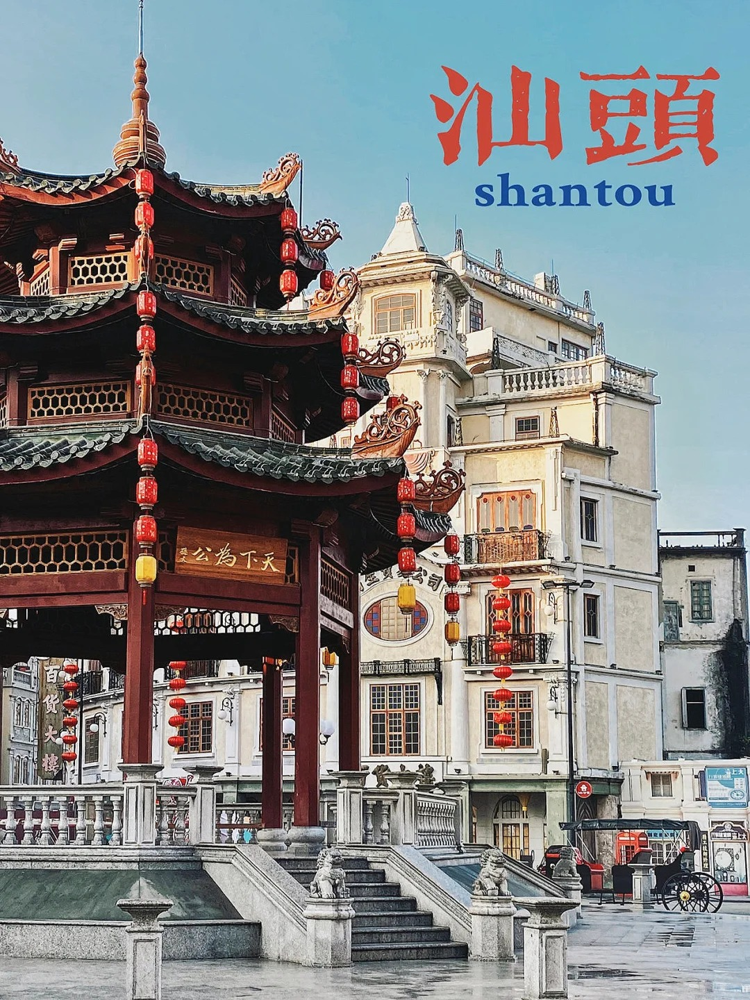
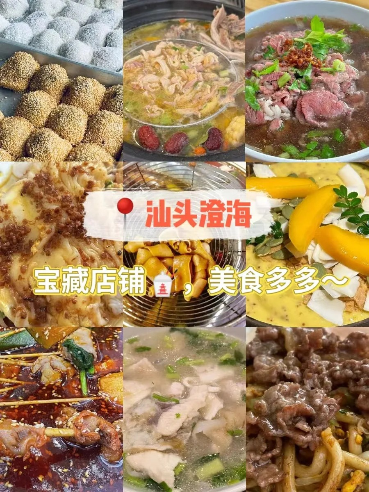
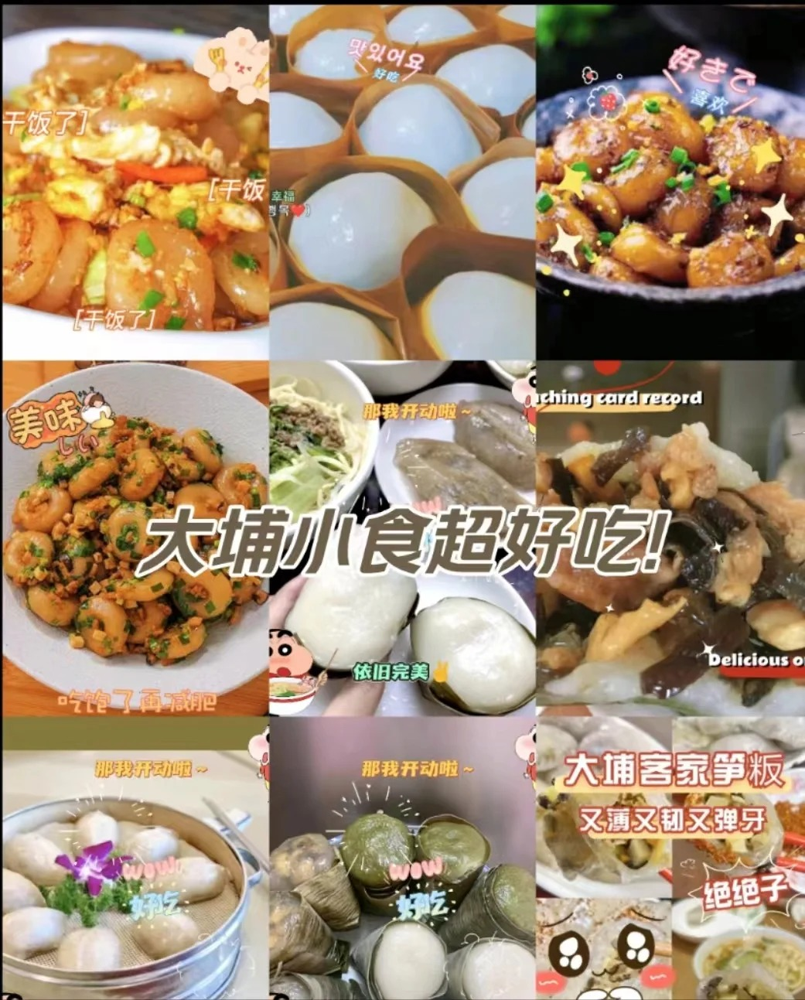
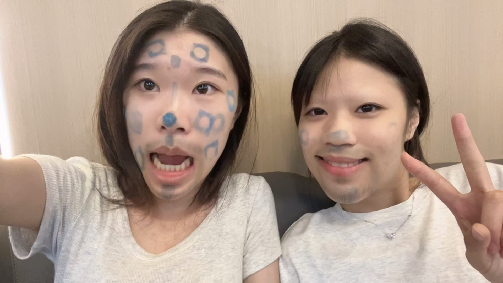

凡事发生皆利于我.
扫码了解我吧~
我的家乡
-

汕头
汕头市(Shantou City),该市方言为潮汕话。汕头市的主要地貌类型有低山、丘陵、冲积平原、台地(海积或海蚀阶地)和滨海沼泽。汕头市是著名侨乡，中国重要口岸，粤东、赣东南、闽西南一带的交通枢纽、进出口岸和商品集散地， 区域性中心城市;史称“粤东之门户,华南之要冲”,有“百载商埠”“南海明珠”之称,是中国5个经济特区之一。
-

澄海美食
鸭母捻：清甜洁白的潮汕“汤圆”; 猪脚圈：香脆可口，回味无穷; 砂锅粥：一个鲜字表达出原汁原味; 糕烧番薯：传统方法制作的小食; 生腌海鲜：胶质弹牙，蟹膏横溢的生腌螃蟹，血淋淋的生腌血蚶，胖嘟嘟的生腌鲜蚝，咸鲜微辣，配上一碗白糜，吃一次终身难忘; 汕头牛肉丸：牛肉丸肉质较为细嫩，口感嫩滑，牛筋丸是在牛肉里加进了一些嫩筋，口感方面就是增加了点嚼头;
-

梅州
梅州市是明清以来客家人衍播四海的主要出发地，是全球最有代表性的客家人聚居地，被誉为“世界客都”。梅州是全国重点侨乡、港澳台同胞重要祖籍地,祖籍梅州的华人华侨和港澳台同胞700多万。 梅州市是闽粤赣边区域性中心城市、全国生态文明建设试验区、广东绿色崛起先行区和文化旅游特色区、沿海经济开放区、海峡西岸经济区城市之一。
-

大埔美食
仙人粄：每到农历入伏，客家人都有吃仙人粄的习俗，话说这天吃它，整个夏天都不会长痱子； 三及第汤:主要是用猪肝、猪瘦肉、猪肚这3种食材,搭配上咸菜、枸杞叶等铺料，再搭配上一些酒糟制作而成的美味鲜汤，也是梅州客家人吃早餐的最爱美食，喝此还能清肝明目； 腌面：属于客家人离开家乡最为眷恋的小吃之一，面条金黄，口感爽口香滑，那种蒜香味、猪油味、酱香味相融合，面条劲道有嚼劲; 盐焗鸡：鸡肉色泽微黄，咸香入味，皮脆肉嫩，香味浓郁； 梅菜扣肉：被称为客家三件宝之一，肉烂味香，梅菜充分的吸收了五花肉的油腻和汤汁，五花肉也拥有了梅菜的清香，咸中带有甜味，肥但不腻口，吃着更加软烂醇香。
我的生活

台球
Billiard是球类运动项目之一。是运动员在台球桌上用球杆通过按照一定的规则击打主球,使其撞击目标球的一项体育休闲项目。
 菜但爱玩
探店拍照
即前往某个商家店铺,根据其店面装修风格拍摄相应的照片,并给出自己的评价。

美食
作为一个美食爱好者，我认为美食不仅仅是满足口腹之欲的工具，更是一种能够带来快乐和幸福感的享受。通过品尝不同地域的美食、不同类型的美食，以及自己动手制作美食，我们能够拓宽视野，增长知识，丰富生活。美食是一种文化，是一种艺术，是一种生活方式。作为一个热爱美食的人，我将继续探索美食的世界，享受其中的乐趣和满足。无论是在餐厅里品尝美食，还是在家中烹饪美食，我都会用心去体验和分享美食的魅力。

品酒
品酒如 品茶，只怀风月。 通常品尝酒的方法不外乎 视觉 、嗅觉及味觉的观察，与品茶有异曲同工之理。
我的室友们

512
宇宙无敌至尊螺旋绝世霹雳炫酷集美丽温柔善良大方可爱于一身的四个人。
YY
绝代佳人仙姿佚貌冰肌玉骨眉目如画环肥燕瘦眉清目秀千娇百媚梨花带雨宛转峨眉靡颜腻理粉国色天姿玉貌花容天仙美愈天人貌赛西施美艳绝世清新脱俗妖娆动人艳光四射淡扫蛾眉嗪首峨眉淡妆浓抹双瞳剪水貌美如花美如冠玉红飞翠舞齿白唇红绰约多姿亭亭玉立如花似玉花枝招展出水芙蓉姿容绝代玉指如葱肤如凝脂清秀高雅秋波流转樱桃小口空谷幽兰眉如新月娇小玲珑小家碧玉粉妆玉琢天桃李清丽脱俗花容月貌明眸皓齿天生丽质！
CC
我觉得她没多美啊 其实我觉得还好啊（变成猿猴）（抢夺路人的香蕉）（飞入丛林）（在藤蔓中荡来荡去）（在藤蔓中荡来荡去）（在藤蔓中荡来荡去）（高声吼叫）（高声吼叫）我的老婆 [舔屏][舔屏][舔屏]（在藤蔓中荡来荡去）； 美。（这条评论虽然只有短短的一个字，却透露着一丝高冷与漫不经心的从容，相得益彰结尾的句号礼貌又不失疏离感恰如其分的显示了高贵而优雅的气质）

II
这么好看，这么有气质，这么沉鱼落雁，国色天香，齿白唇红，愁眉啼妆，如出水芙蓉，绰约多姿，国色天香，娇小玲珑，绝代佳人眉目如画，眉清目秀，美如冠玉花容月貌，明眸皓齿，千娇百媚，倾国倾城，如花似玉，亭亭玉立，仙姿佚貌，小家碧玉，秀外慧中，仪态万方，手如柔玉，美丽闭月羞花，天姿国色，温柔可人，美丽动人，高贵冷艳，艳压群芳，眉清目秀，美若天仙，冰雪聪明，风华绝代，天生丽质。